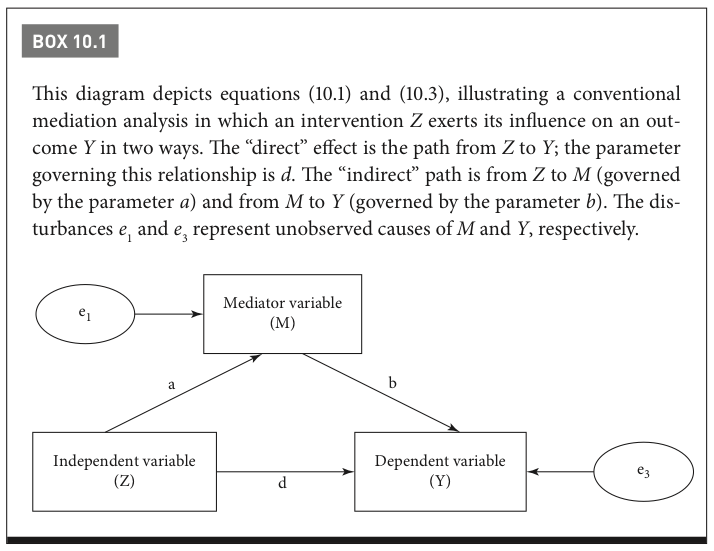
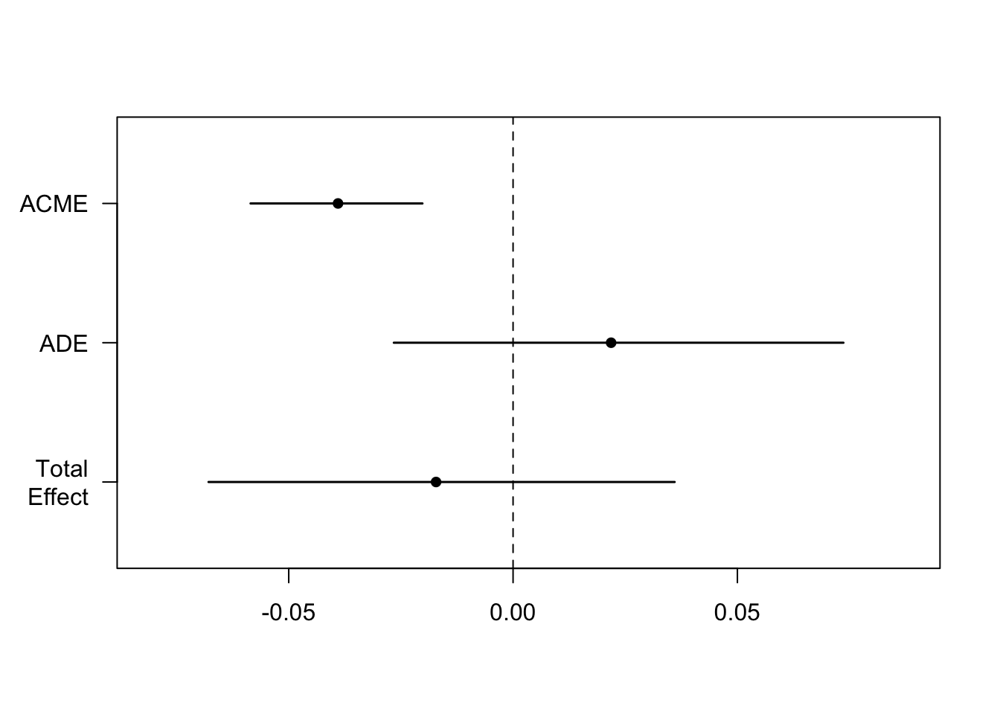
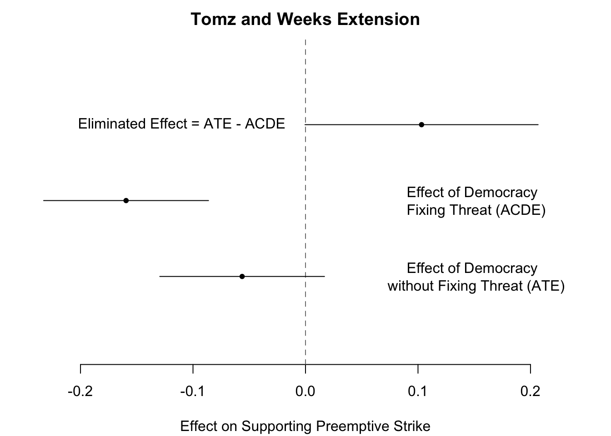

library(rio)
gad <- import("gadvan.dta")10 Mediation
In this section, we will discuss mediation. It helps us answer the question of, “how does this treatment affect that outcome?” (Bullock and Ha, 508)
We will draw on the following resources
- Gerber and Green. 2012. Chapter 10.
- Bullock, John and Shang E. Ha. 2011. “Mediation Analysis is Harder than it Looks.” In Cambridge Handbook of Experimental Political Science.
- Used for R code: Gadarian, Shana Kushner and Eric van der Vort. 2017. “The Gag Reflex: Disgust Rhetoric and Gay Rights in American Politics.” Political Behavior DOI: 10.1007/s11109-017-9412-x.
- Kosuke Imai, Luke Keele, Dustin Tingley and Teppei Yamamoto. 2011. “Unpacking the Black Box of Causality: Learning about Causal Mechanisms from Experimental and Observational Data.” American Political Science Review, 105(4), pp. 765-789
- Avidit Acharya, Matthew Blackwell, and Maya Sen. 2018. “Analyzing Causal Mechanisms in Survey Experiments.” Political Analysis, Vol. 26, No. 4: 357-378
We will cover
- What is the general approach?
- What are the assumptions? Why are these often violated?
- How can I implement it?
- Alternatives: Causal process vs. Causal interaction/intervention (Acharya et al.)
Example: Job training
- \(Z_i\) is 1 if participating in job training program
- \(Y_i\) Level of Depression
- \(M_i\) Level of job-seeking efficacy
10.1 Mediation Overview
Three broad schools of thought on mediation analysis
- Never use it
- Use it with extreme caution
- Design your way out of the issue
- (Of course, a fourth: use it without care)
10.1.1 Distinguishing mediators vs. moderators
What is the difference between a pre-treatment and post-treatment covariate?
What is the difference between mediation and moderation?
- Mediation– generally answers the why/how. WHAT’S THE MECHANISM!?!?
- Moderation– generally answers the for whom/when

Gerber and Green 2012
We can identify multiple pathways in this diagram
- Total effect from \(Z_i\) to \(Y_i =\)
- Direct effect (\(d\)) from \(Z_i\) to \(Y_i\) +
- Indirect (“mediation”) effect (\(a*b\)) from \(Z_i\) to \(Y_i\) through \(M_i\)
10.2 Implementing a Mediation Analysis
We will cover two approaches for estimating mediation effects.
10.2.1 Baron-Kenny Approach
Traditional mediation analysis (Baron and Kenny 1986)
Conduct three regressions where \(M_i\) is the mediator, \(Y_i\) is the outcome and \(Z_i\) is the experimental assignment.
\[\begin{align*} M_i &= \alpha_1 + aZ_i + \epsilon_{1i}\\ Y_i &= \alpha_2 + cZ_i + \epsilon_{2i}\\ Y_i &= \alpha_3 + dZ_i + bM_i + \epsilon_{3i} \end{align*}\]Strategy:
- See if effect of treatment on mediator is significant.
- See if effect of treatment on outcome is significant.
- See if effect of mediator on outcome is significant, controlling on the treatment.
Let’s see how these equations relate to our quantities of interest:
Substitute equation 1 (\(M_i = \alpha_1 + aZ_i + \epsilon_{1i}\)) into equation 3
\[\begin{align*} Y_i &= \alpha_3 + dZ_i + bM_i + \epsilon_{3i}\\ Y_i &= \alpha_3 + dZ_i + b(\alpha_1 + aZ_i + \epsilon_{1i}) + \epsilon_{3i}\\ Y_i &= \alpha_3 + dZ_i + b\alpha_1 + baZ_i + b\epsilon_{1i} + \epsilon_{3i}\\ Y_i &= \alpha_3 + (d + ab)Z_i + b(\alpha_1 + \epsilon_{1i}) + \epsilon_{3i} \end{align*}\]The total effect of \(Z_i\) on \(Y_i\) is \(c = d + ab\). The direct effect of \(Z_i\) is \(d\). The indirect effect is \(ab\).
Criticism of Approach: “But increasing use of the Baron- Kenny method is not a good thing. Like related methods that do not require manipulation of mediators, it is biased, and in turn it leads researchers to biased conclusions about mediation” (Bullock and Ha, 509)
10.2.2 Problems with Mediation
Let’s recall how we came to understand an unbiased estimate of the ATE in experiments.
\[\begin{align*} E[\hat{ATE}] &= \frac{1}{m}\sum_1^m E(Y_i) - \frac{1}{N-m}\sum_{m+1}^{N} E(Y_i )]\\ &= E[Y_i(1) | Z_i = 1] - E[Y_i(0) | Z_i = 0]\\ &=E[Y_i(1) - Y_i(0)] \\ &= ATE \end{align*}\]What was a key assumption that allowed us to drop the \(Z_i\) from the equations?
Why is mediation hard?
- The mediator (\(M_i\)) is not randomly assigned
- For equation 3: \(Y_i = \alpha_3 + dZ_i + bM_i + \epsilon_{3i}\) we move from experimental to observational land
- Problem of omitted confounders
If an unobserved variable affects both \(M\) and \(Y\) it will cause \(\epsilon_1\) and \(\epsilon_3\) to covary (be nonzero).
- “Random assignment of \(Z_i\) can ensure that \(Z\) bears no systematic relationsto \(\epsilon_1\) and \(\epsilon_3\) but nothing about whether \(M\) or \(Y\) are systematically related to these error terms.”
- \(\E(\hat{b}) = b + \frac{cov(\epsilon_1, \epsilon_3)}{var(\epsilon_1)}\)
- \(\E(\hat{d}) = d - a\frac{cov(\epsilon_1, \epsilon_3)}{var(\epsilon_1)}\)
It could bias the effect of \(M_i\) and bias estimates of the effects of any variables with which \(M_i\) is correlated, including \(Z_i\)!!
10.3 Causal Mediation Framework
Mediation in Potential Outcomes Notation
Total unit treatment effect \(= Y_i(1, M_i(1)) - Y_i(0, M_i(0))\)
- Ex: \(M_i(1)\): Level of efficacy individual \(i\) would report if he participates in the program
- Ex: \(Y_i(1, M_i(1))\): Level of depression individual \(i\) would report if he participates in the program and reports efficacy at level \(M_i(1)\).
The Perils of Mediation: Complex Potential Outcomes
Mediation Effect: How the outcome (\(Y_i\)) changes if we were to hold the experimental assignment (\(Z_i\)) constant while varying the mediator (\(M_i\)) by the amount the mediator would change if experimental assignment (\(Z_i\)) were varied.
The indirect of \(M_i(z)\) holding \(z\) constant at 0 or 1:
- \(Y_i(M_i(1), 1) - Y_i(M_i(0), 1)\)
- \(Y_i(M_i(1), 0) - Y_i(M_i(0), 0)\)
Note: one of the terms in each equation is never observed empirically.
Direct effect: How the outcome (\(Y_i\)) would change if we were to vary experimental assignment \(Z_i\) while holding the mediator (\(M_i\)) constant at the value it would take on for a given value of \(Z_i\)?
Direct effects of \(Z_i\) on \(Y_i\) holding \(M_i(z)\) constant at \(M_i(1)\) or \(M_i(0)\):
- \(Y_i(M_i(0), 1) - Y_i(M_i(0), 0)\)
- \(Y_i(M_i(1), 1) - Y_i(M_i(1), 0)\)
Note: one of the terms in each equation is never observed empirically.
10.3.1 ACME Assumptions
We assume sequential ignorability
- \(Y_i(z, m), M_i(z) \perp Z_i | X_i = x\)
- \(Y_i(z, m) \perp M_i(z) | Z_i = z, X_i = x\)
Sequential Ignorability: Treatment is ignorable given the observed pre-treatment confounders and mediator is ignorable given the observed treatment and the observed pre-treatment covariates.
- This means \(Z_i\) is as-if randomized conditional on \(X_i=x\)
- And \(M_i(z)\) is as-if randomized conditional on \(X_i=x\) and \(Z_i = z\)
- In standard experiments, you get (1) through randomization but not necessarily (2).
- \(X_i\) must include all confounders. NOTE: confounders MUST be pre-treatment. Post-treatment confounders are not allowed!
- Potential violations of the assumption could be unobserved pre-treatment confounders or any observed/unobserved post-treatment confounders (e.g., alternative causal pathways related to the observed mediator).
Visually, we can see this from Imai et al. (2009)

10.4 ACME Application in R
We are going to replicate a portion of the analysis from “The gag reflex: Disgust rhetoric and gay rights in American politics” by Shana Kushner Gadarian and Eric Van der Vort published in Political Behavior in 2018.
- Amazon’s Mechanical Turk study of 636 respondents
- \(Z_i\): Randomly assigned to positive, neutral, or disgust article/photo about a constitutional amendment proposed to ban same-sex marriage

- \(M_i(z)\): Self-reported general level of disgust (also maybe anger and enthusiasm)
- \(Y_i(z,M_i(z))\): Support for LGBT issues
Approach the authors take: Run mediation model for disgust, also controlling on anger as a covariate since the treatment might influence anger (See Table 5).
10.4.1 Mediation R Implementation
We are going to fit the Imai et al. ACME framework
- Fit a “mediator” model with \(M_i\) as the dependent variable, with the treatment \(Z_i\) and other pre-treatment covariates \(X_i\) as the covariates.
- Fit a “outcome” model with \(Y_i\) as the dependent variable, with \(M_i\), \(Z_i\) and \(X_i\) as covariates.
Note: This is more flexible than Baron-Kenny because you don’t have to use least squares. Should be the same as Baron-Kenny when both models are linear models.
- Use the
mediate()function:mediate(model.m, model.y, sims = 1000, treat = "treatname", mediator = "mediatorname")- The mediator model is the first input.
- The outcome model is the second input.
- Then specify the variable names for the treatment and mediator variables.
- Store the output as an object.
- Use
summary()on the object to get the ACME, ADE, and total effect, with uncertainty estimates. - Use
plot()on the object to plot these three effects.
- Use
Our key variables are
adoption: support for same-sex adoptiondisgust_treat: Disgust treatmentpostive_treat: Positive treatmentDisgust: Feelings of disgustangry: Feelings of angerdss: Disgust sensitivity scalePID: party identificationideology: ideology
We will focus on column 2 of Table 5 and fit a mediation model for the effect on support for same-sex adoption using the Imai et al. framework.
- Let’s inspect these models? Why do the authors include control variables? Would you have done anything differently?
- Which aspects of the assumption of sequential ignorability does this design easily meet? Are there possible violations to aspects of the assumptions?
## Mediator as outcome, regressed on treatment
model.m <- lm(Disgust ~ disgust_treat + positive_treat + dss, data = gad)
## Y as outcome, controlling on mediator and treatment
model.y <- lm(adoption ~ disgust_treat + positive_treat
+ Disgust + angry + PID + ideology, data=gad)Install and load mediation package
install.packages("mediation")library(mediation)
medfit <- mediate(model.m=model.m, model.y=model.y,
treat="disgust_treat", mediator="Disgust")
summary(medfit)
Causal Mediation Analysis
Quasi-Bayesian Confidence Intervals
Estimate 95% CI Lower 95% CI Upper p-value
ACME -0.0390 -0.0585 -0.02 <2e-16 ***
ADE 0.0219 -0.0266 0.07 0.38
Total Effect -0.0172 -0.0679 0.04 0.49
Prop. Mediated 1.1350 -12.4455 15.43 0.49
---
Signif. codes: 0 '***' 0.001 '**' 0.01 '*' 0.05 '.' 0.1 ' ' 1
Sample Size Used: 636
Simulations: 1000 Because these are both linear models, we should be able to verify it achieves the same result as the Baron-Kenny approach:
## Check with Baron-Kenny
c.1 <- coef(model.m)["disgust_treat"] # Coef for treatment ("a" from before)
c.2 <- coef(model.y)["Disgust"] # Coef for mediator ("b" from before)
## Mediation Effect (indirect effect)
c.1 * c.2disgust_treat
-0.03847702 We can plot the results
plot(medfit)
How should we interpret the results?
10.4.2 Sensitivity Analyses
Sensitivity to violations of sequential ignorability, where the parameter \(\rho\) represents the correlation between unexplained pre-treatment factors related to \(Y\) and \(M\). See Imai et al. (2010).
sens.out <- medsens(medfit, rho.by = 0.1,
effect.type = "indirect", sims = 100)plot(sens.out, sens.par = "rho", main = "Disgust", ylim = c(-0.2, 0.2))10.5 Mediation Alternatives
Mediation is hard. So, what can we do instead?
- Only examine the effect of \(Z_i\) on \(M_i\)
- Implicit mediation analysis (Gerber and Green chap. 10)
- Randomly manipulate the mediator (Acharya et al.)
- For example, to examine the (average) “controlled direct effect as the effect of treatment for a fixed value of the mediator” (Acharya et al.)
- Or examine Average causal effect of the mediator: “How manipulating a secondary, possibly intermediate variable can change the magnitude and direction of a causal effect”
- For more designs (See Imai et al. 2010 and R mediation documentation)
- For analyses with multiple mechanisms, see Imai and Yammamoto (2013). For applications to observational data, see also Acharya, Blackwell, Sen (2016)
Example: Extension of Tomz and Weeks (2013)
Acharya modify the design from Tomz and Weeks (2013). Tomz and Weeks (2013) show, “that Americans are less likely to support preemptive strikes against democracies versus nondemocracies. Using our framework, we are able to show that this difference is strengthened when information about potential threats are provided, suggesting that the potential threat of a nuclear program plays a role in how Americans decide to support preemptive strikes against democracies versus nondemocracies. Importantly, we reach this conclusion without requiring the strong assumptions of the original paper’s mediation analysis.”
Subjects presented with different versions of vignettes
- \(Y\): Outcome: Support for a preemptive strike
- \(T\): Randomly assigned to different treatment arms (democracy vs. non-democracy)
- Natural mediator arm- only treatment randomized
- Manipulated Mediator (presence of information about threat)
- “The country has stated that it is seeking nuclear weapons to aid in a conflict with another country in the region.”
Controlled Direct Effect
- The effect of the treatment on the outcome when the mediator is held constant for all subjects as \(m\).
- \(CDE_i(t_a,t_b,m)=Y_i(t_a,m)-Y_i(t_b,m)\)
Example: would be the difference in support for a strike between these two vignettes when respondents are provided with the additional information about the threat.
- This is different from the naturally occurring indirect effect, which is: the difference in support when the country is a democracy and when the country is a democracy but the perceived threat is set to the level the respondent would infer if the country were not a democracy.
Implementation in R
## Load data
tw <- read.csv("tw-replication-dvn.csv", stringsAsFactors = FALSE)## Outcome: support for strike
tw$favor_binary <- ifelse(tw$favor_attack < 3, 1, 0)
table(tw$favor_binary)
0 1
840 406 ## Treatment indicator
table(tw$dem_dummy)
0 1
614 633 ## Mediator dummy- reverse coded
## so threat=0 means presence of threat
tw$threat_dummy <- 1-tw$threat_dummy
table(tw$threat_dummy)
0 1
623 624 We can fit an interaction between the two treatments– democracy \(\times\) threat.
fit <- lm(favor_binary ~ dem_dummy*threat_dummy, data = tw)Our controlled direct effect will be the effect of the treatment when the mediator = 0, indicating the presence of the threat.
- Recall, in interactions we interpret
dem_dummyas the effect of the treatment whenthreat_dummyis 0.
acde <- coef(fit)["dem_dummy"]
acde dem_dummy
-0.1594824 This represents the controlled direct effect- treatment effect when people are provided information about threat.
Within this design, we could still recover an average treatment effect based on just the condition where there was no presence of a threat. Even within the same interaction model, we could get this by focusing on the effect of the treatment when threat_dummy = 1, indicating no presence of a threat.
fit <- lm(favor_binary ~ dem_dummy*threat_dummy, data = tw)For the average treatment effect, we want the effect of the treatment under natural mediation settings. This is
ate <- coef(fit)["dem_dummy"] + coef(fit)["dem_dummy:threat_dummy"]
ate dem_dummy
-0.05632118 Because it represents the difference in outcomes when we manipulate the treatment but allow the mediator to take its natural values. An alternative way to get this:
predict(fit, data.frame(dem_dummy = 1, threat_dummy = 1)) -
predict(fit, data.frame(dem_dummy = 0, threat_dummy = 1)) 1
-0.05632118 Eliminated Effect
A final effect we could recover is the eliminated effect. The eliminated effect is the difference between the ATE - ACDE: “The nature of a causal mechanism is about how much of a treatment effect is explained by a particular mediator.”
fit <- lm(favor_binary ~ dem_dummy*threat_dummy, data = tw)
aee <- coef(fit)["dem_dummy:threat_dummy"]Well, in this example, the interaction term represents how much our effect varies as we move between values of the threat_dummy variable. BINGO!
- “Thus, we can interpret the eliminated effect as the portion of the ATE that can be explained by \(M_i\), either through indirect effects or interactions.”
Plot all three. The authors use bootstrapping and robust standard errors. These are standard OLS confidence bands.
par(mar = c(4.1, 0.1, 2.1, 0.1))
plot(x = c(ate, acde, aee), y = 1:3,
xlim = c(-0.25, 0.25),
ylim = c(0, 4), bty="n",
yaxt = "n", pch=20,
ylab = "", main = "Tomz and Weeks Extension",
xlab = "Effect on Supporting Preemptive Strike")
abline(v = 0, col = "grey50", lty = 2)
text(x = -0.01, y = 3, "Eliminated Effect = ATE - ACDE", pos=2)
text(x = 0.15, y = 2, "Effect of Democracy \n Fixing Threat (ACDE)")
text(x = 0.15, y = 1, "Effect of Democracy \n without Fixing Threat (ATE)")
lines(confint(fit)[2,], c(2,2))
lines(confint(fit)[4,], c(3,3))
se.sum <-sqrt(vcov(fit)[2,2] + vcov(fit)[4,4] + 2*vcov(fit)[2,4])
lines( c(ate - 1.96*se.sum, ate + 1.96*se.sum), c(1,1))